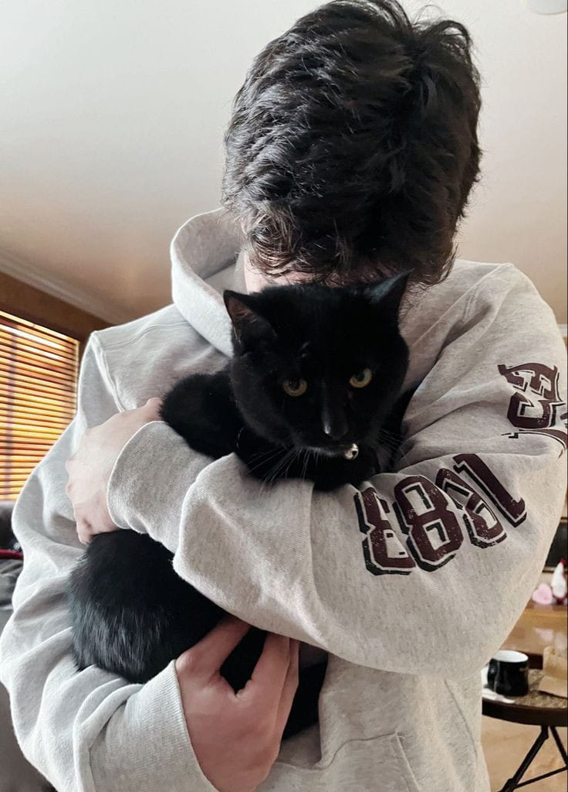

المتطوعين والمتبرعين
في M.meow، نؤمن أن العطاء يصنع الفرق. هذه الصفحة مخصصة لأبطال الظل المتطوعين الذين يبذلون وقتهم وجهدهم من أجل إنقاذ القطط، والمتبرعين الذين يقدمون من مواردهم لدعم الرعاية والمستلزمات. بمساعدتكم، نستطيع أن نمنح كل قطة فرصة للحياة.
المتبرعين

- الاسم: خالد إبراهيم
- نوع التبرع: طعام قطط
- الاسم: غير معروف
- نوع التبرع: مستلزمات طبية
- التواصل: -
- الاسم: مجهول الخير
- نوع التبرع: صناديق طعام
- التواصل: -
المتطوعين
- الاسم: عبدالعزيز محمد
- نوع المساعدة: رعاية مباشرة
- الشروط: محب للحيوانات
- التواصل: 123456789
- الاسم: نور الهداية
- نوع المساعدة: تنظيف واهتمام
- الشروط: مرونة بالمواعيد
- التواصل: 123123123
- الاسم: ريم بشير
- نوع المساعدة: تصوير وتوثيق
- الشروط: امتلاك كاميرا
- التواصل: 555000111